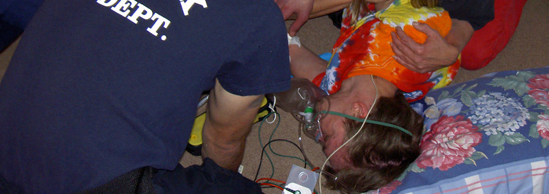
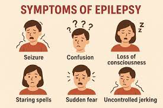
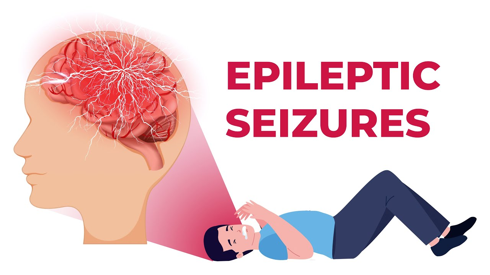

Back to List
Different types of seizures and how you can save lives

By Nick Preston | October 7 2025
Epilepsy has me, but I have my life.
Hi I'm Nick and I was born with epilepsy as a kid. I would have up to 500 mini=seizures a day and my parents didn't know what was happing to me until we went to the doctors and they told us I was diagnosed with epilespy. So I started to take medication for it.
Everything was going fine until puberty hit. Thats when my epilpesy changed to full-on seizuers called grand mal seizures (the worst ones) so they put me on different medication but I would forget to take them. It lead me to having a seziure this year.
When you have a seziure you don't remeber anything and everyhting goes black as if someone or something else is in control now. They can last from 2 min - 2 hours with out any emergency medication.
Overview
A tonic-clonic seizure, previously known as a grand mal seizure, causes a loss of consciousness and violent muscle contractions. It's the type of seizure most people picture when they think about seizures.
During a seizure, there's a burst of electrical activity in the brain that causes changes in behavior and movements. Seizures can be focal, meaning the burst of electrical activity happens in one area of the brain. Or seizures can be generalized, in which they result in electrical activity in all areas of the brain. Tonic-clonic seizures may begin as focal seizures in a small area of the brain and spread to become generalized seizures that involve the whole brain.
Focal and generalized seizures have different symptoms. People who have generalized seizures usually lose consciousness.
Symptoms
Tonic-clonic seizures have two stages:
- Tonic phase. Often, someone in the tonic phase will make a sound, such as a groan or yell. The muscles suddenly get stiff and cause the person to fall down. Loss of consciousness occurs. This phase tends to last about 10 to 20 seconds.
- Clonic phase. The muscles go into rhythmic contractions. The arms and legs often jerk. They alternately flex and relax. Convulsions usually last 1 to 2 minutes or less.
The following symptoms occur in some but not all people with tonic-clonic seizures:
- Loss of bowel and bladder function. This may happen during or following a seizure.
-
Not responding after convulsions. The person may not become conscious for several minutes after convulsions have ended.
- Confusion. The person often is disoriented after a tonic-clonic seizure. This is referred to as postictal confusion.
-
Fatigue. Sleepiness is common after a tonic-clonic seizure.
-
Bad headache. Headaches may occur after a tonic-clonic seizure.

Causes
The brain's nerve cells typically communicate by sending electrical and chemical signals across the synapses that connect the cells. A synapse is the area between cells that allows them to send messages. Tonic-clonic seizures occur when there's a surge of electrical activity over the surface of the brain. Many nerve cells fire at once, much faster than usual. Exactly what causes these changes often is not known.However, tonic-clonic seizures are sometimes caused by other health problems, such as:
Injury or infection. Severe head injuries can cause tonic-clonic seizures. Other possible causes include infections, such as encephalitis or meningitis, or having these infections in the past. Stroke and dementias that cause degeneration in the brain, such as Alzheimer's disease, also can cause tonic-clonic seizures.
Congenital or developmental factors. These can include blood vessels that don't form properly in the brain and brain tumors.
Metabolic issues. Very low blood levels of glucose, sodium, calcium or magnesium can cause tonic-clonic seizures.
Withdrawal syndromes. These can include using or withdrawing from drugs, including alcohol.

Risk factors
Risk factors for tonic-clonic seizures include:
- A family history of seizure disorders.
-
Any injury to the brain from trauma, a stroke, previous infection and other causes.
-
Sleep deprivation.
-
Medical problems that affect the balance of minerals in the body.
-
Illicit drug use.
-
Heavy alcohol use.
Complications
Having a seizure at certain times can be dangerous for you or others. You might be at risk of:
- Falling. If you fall during a seizure, you can injure your head or break a bone.
-
Drowning. If you have a seizure while swimming or bathing, you're at risk of accidental drowning.
-
- Car accidents. A seizure that causes either loss of awareness or control can be dangerous if you're driving a car or operating other equipment.
- Pregnancy complications. Seizures during pregnancy pose dangers to both mother and baby. And certain anti-seizure medicines increase the risk of birth defects. If you have epilepsy and plan to become pregnant, talk with a healthcare professional. Your medicines may need to be adjusted. A healthcare professional likely will monitor your pregnancy.
- Emotional health issues. People with seizures are more likely to have depression and anxiety. Children with seizures may be more likely to develop attention deficit hyperactivity disorder, also called ADHD. Emotional health issues may be a result of dealing with the condition.
What to do if you someone having a seizure
Tonic-clonic seizures involve both tonic (stiffening) and clonic (twitching or jerking) phases of muscle activity.
Tonic-clonic seizures may start with a simple partial seizure or aura. The person may experience changes in sensation, mood or emotion leading up to the tonic-clonic seizure.
If you are with someone who has a tonic-clonic seizure: Do not put anything in their mouth. Turn them onto their side. Make sure the area around their body is clear of objects that could hurt them. Time the seizure. Treatment for tonic-clonic seizures can involve medication, surgery, nerve stimulation, dietary therapy or a combination of these approaches.
October 31, 2025 by Nick
Sources: